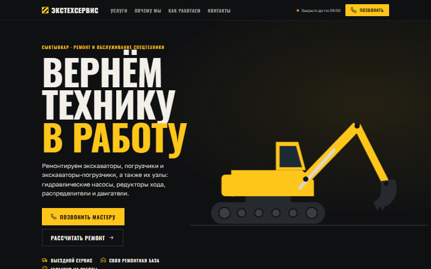
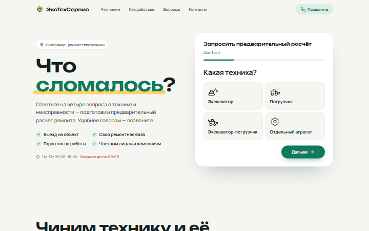
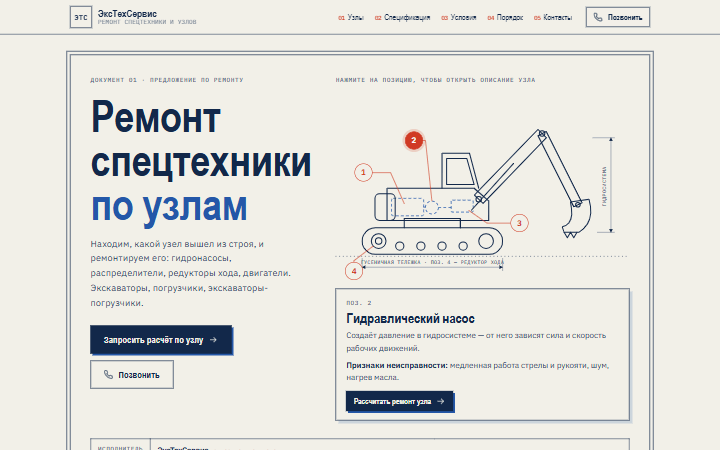

Тестовое задание · «Бизнес компас»
ЭксТехСервис: три концепции лендинга
Ремонт и обслуживание спецтехники в Сыктывкаре. Один бриф — три самостоятельных решения для трёх сценариев: срочный звонок, подбор ремонта по шагам и разговор с инженером на языке узлов.

«Тяжёлая смена»
Тёмный индустриальный стиль, сигнальный жёлтый, плакатная типографика и силуэт экскаватора.
- Главное действие:
- позвонить мастеру
- Для кого:
- техника встала, нужен ремонт

«Что сломалось?»
Светлый и дружелюбный: первый экран — мастер заявки из четырёх вопросов вместо длинной формы.
- Главное действие:
- запросить расчёт по шагам
- Для кого:
- частники, которые не знают, что именно сломалось

«Чертёж»
Инженерная бумага, линии и пометки: экскаватор как чертёж с кликабельными узлами и спецификация работ.
- Главное действие:
- расчёт по конкретному узлу
- Для кого:
- компании и механики, говорящие на языке узлов
Факты — только из брифа
Телефон, почта, MAX, цены, сроки и условия гарантии не предоставлены — помечены как «уточнить у клиента». Кнопки звонка подключаются одной правкой в shared/common.js.
Иллюстрации и шрифты
Все иллюстрации и иконки — векторные, нарисованы для концептов. Шрифты — Google Fonts по лицензии SIL Open Font License.
Исходники и отчёт
Репозиторий на GitHub — код, README и короткий отчёт о работе.